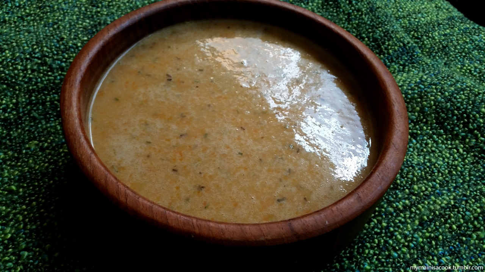

Potage le Magnifique

The perfect meal for cold winters!
Recipe from The Gourmet, Tamriel's most renown chef!
Fit for an emperor, the broth can be substituted for with vegetable
broth if you'd like a tasty vegan version of this recipe.
Ingredients:
- 2 cups chicken broth
- 2 cups beef broth
- ¼ cup white wine
- ½ cup plain flour
- 100g butter or olive oil
- 2 red onions, chopped
- 1 large leek, chopped
- 3 carrots, peeled and chopped
- 1 large potato, peeled and cubed
- 1 tbsp dried mixed herbs
- 1 bay leaf
- Salt and pepper, to taste
Steps:
- In a pot, melt the butter and fry the leeks on medium heat until softened slightly
- Add the onions and garlic and fry until browned
- Pour in the wine and cook for 2 minutes, stirring now and then
- Add the potatoes, carrots, water, and broth
- Slowly sift int he flour while stirring conitnuously, to make sure it doesn't clump
- Add the herbs, sale and pepper, and simmer on low heat while covered for 30 minutes,
or until the potatoes and carrots have softened
- Remove the bay leaf and pour the soup into a food processor or blender
- Blend until smooth and serve hot
Home